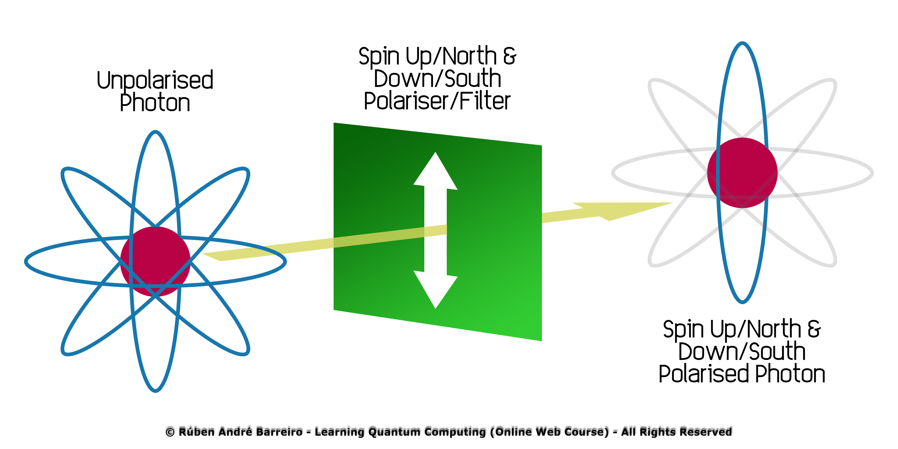
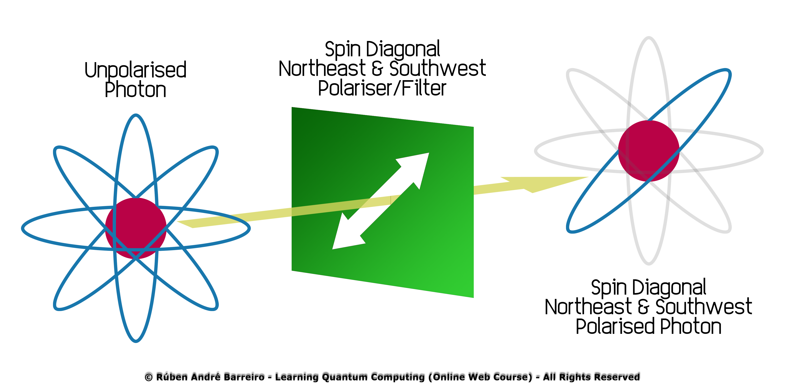

- Introduction to the Fundamentals of Quantum Computing
- Quantum Subsystems (Represented as Qubits)
- Quantum Superposition of States
- Quantum Superposition through Practical Experiments/Examples
- Quantum Entanglement of States
- Quantum Teleportation
- Initialisation of Quantum Subsystems
- Reversibility of Quantum Subsystems
- Quantum Operations (Quantum Logic Gates/Operators)
- Quantum Systems (Represented as Quantum Circuits)
- Uncertainty Principle (in Quantum States)
- Quantum Measurement of States
- Quantum Coherence and Decoherence
- Rutherford's Scattering
- Quantum Parallelism
- Existence of Quantum Multiverse
- This week will contain theoretical lectures and practical exercises
-

- This work is licensed under a Creative Commons Attribution-NonCommercial-NoDerivatives 4.0 International License.

üìç Select a topic:
⚠️ Notes:
©️ License:
The Fundamentals of Quantum Computing (Week 7)
Core 1 - Introduction to Quantum
 Rúben André Barreiro
Rúben André Barreiro
Introduction to the Fundamentals of Quantum Computing
-
Let's start with the following quote to reflect about the Fundamentals of Quantum Computing:
-
"Classical Computation is like a solo voice - one line of pure tones succeeding each other.
Quantum Computation is like a symphony - many lines of tones interfering with one another."
- Seth Lloyd
-
-
The 14 most relevant principles and properties of Quantum Physics/Mechanics that are on the basis of Quantum Computing,
allowing its current development, are the following:- Quantum Subsystems (Represented as Qubits)
- Quantum Superposition of States
- Quantum Entanglement of States
- Quantum Teleportation
- Initialisation of Quantum Subsystems
- Reversibility of Quantum Subsystems
- Quantum Operations (Quantum Logic Gates/Operators)
- Quantum Systems (Represented as Quantum Circuits)
- Uncertainty Principle (in Quantum States)
- Quantum Measurement of States
- Quantum Coherence and Decoherence
- Rutherford's Scattering
- Quantum Parallelism
- Existence of Quantum Multiverse
The most relevant principles and properties of Quantum Physics/Mechanics and Quantum Computing
Quantum Subsystems (Represented as Qubits)
-
In an ordinary Classical RAM hardware module, the common Quantum State of several electrons is interpreted as only one Classical Bit.
-
The logical state is determined by the expectation value of its register contents (i.e., tension of a capacitor).
-
The interpretation as Classical Bits is performed by comparing the measured value to a defined threshold,
while the great number of particles guarantees that the uncertainty of the measurement is small enough
$ \Bigl( O\Bigl(\frac{1}{\sqrt{n}}\Bigr) \Bigr) $ to make errors practically impossible. -
Due to acting and performing operations in atomic and subatomic levels, as also, due to its inherent random and uncertain behaviours,
which are a little difficult to control and understand, the Quantum Computations have higher probabilities of occurring erros than in
Classical Computations, as presented following:-
$P(Errors\ in\ Classical\ Computations) = 10^{-9} = 0.00$ $000$ $000$ $1$,
i.e., the acceptable minimum values for B.E.R. (Bit Error Rate). -
$P(Errors\ in\ Quantum\ Computations) = 10^{-3} = 0.00$ $1$,
i.e., the current acceptable minimum values for Q.B.E.R. (Quantum Bit Error Rate).
-
-
In a Quantum Computer, the information is represented directly as the common Quantum State of many Quantum Subsystems
(i.e., Qubits or Quantum Bits). -
Each Quantum Subsystem is described by a combination of two "pure" states (i.e., "pure" basis or basis states) interpreted as \(\left |0 \right>\) and \(\left |1 \right>\).
-
This combinations can be made by many forms, like per example:
-
Ground and Excited States of an Ion:


-
You can see the behaviour of the Ion's Ground and Excited States, in the following Live Code Preview, provided by Code SandBox:
-
-
Spin of a Particle:

-
You can see the behaviour of a Spin of a Particle, in the following Live Code Preview, provided by Code SandBox:
-
-
Polarisation of a Photon:


-
You can see the behaviour of a Polarisation of a Photon, in the following Live Code Preview, provided by Code SandBox:
-
-
Ground and Excited States of an Ion:
Quantum Superposition of States
-
The Quantum Superposition of States is one of the most important fundamental principles of Quantum Physics/Mechanics.
-
In the Quantum World, a particle would have a Quantum State,
which can be seen as being composed by more than one other different and simultaneous Quantum States also. -
This principle states that, any two (or more) Quantum States can be added together (i.e., "superposed") and
the result will be another valid Quantum State, represented by the sum of the values of the
same two (or more) Quantum States. -
These Quantum States, when "superposed", are both occurring at the same time.
-
For example, in a Quantum Superposition of States A and B, it's not occurring the Quantum State A or the Quantum State B,
but occurring the Quantum State A and the Quantum State B, at the same exactly moment!!! -
This defies the Classical Interpretation of the World we used to, where some object have never two states at the same time.
-
For example, a lamp bulb never can be turned on and turned off, or, a statement are never true and false, at the same exactly time.
-
This it's what's we commonly called, for so long, the Duality Principle, and it's also,
one of the basis for the data processing in the Classical Computing paradigm. -
In mathematic terms, it refers to a property of solutions to the Schrödinger's Equation,
because since the Schrödinger's Equation is linear, any linear combination of solutions will also be a solution. -
A general and generic Quantum State it's represented as an equation of this kind:
-
$ \left| Ψ(t) \right> = \sum_{n} C_{n}(t) \left| Φ_{n} \right> $
-
-
One of the most common examples of this fundamental principle is the state of a Qubit (Quantum Bit),
based in the previously mentioned Duality Principle and as used in Quantum Computing and Quantum Information Processing,
which is Quantum Superposition of the "Basis States" (i.e., $ \left| 0 \right> $ and $ \left| 1 \right> $), where $ α $ and $ β $ are amplitutes of the probabilities of occurring $ \left| 0 \right> $ and $ \left| 1 \right> $,
respectively:-
$ \left| qubit \right> = α\left| 0 \right> + β\left| 1 \right> $
-
-
Where, the Quantum State 0 could be off, false, with no signal, not working, not finished, etc., in a negative fashion.
-
And, in opposite direction, the Quantum State 1 could be on, true, with signal, working, finished, etc., in a positive fashion.
-
Each one of the components (i.e., possibilities) associated to a Quantum State have a probability associated of happening in the Classical World,
because we can only observe concrete, absolute and deterministic aspects in the Classical World, as we know... -
But in the Quantum World, all this possibilities are always happening at the same time, with a such probability associated,
in a non-concrete, non-absolute and non-deterministic fashion!!! -
Likely, in a Distribution of Probabilities with Discrete Values, the sum of the values of the Quantum States in a
Quantum Superposition of States must always be equal to 1.0 (100 %). -
Thus, the probabilities of occurring each state in a Quantum Superposition of States are, in general, neither 0.0 (0 %) nor 1.0 (100 %).
-
The sum of the probabilities of occurring $ \left| 0 \right> $ and $ \left| 1 \right> $ in a Quantum Superposition of States, can be calculated by the sum of its absoulte values
(i.e., its modulo values) squared, as the following presented:-
$ |α|^2 + |β|^2 = 1 $, where $ α $, $ β $ $ \in [0,1] $
-
-
A completely equilibrated Quantum Superposition of States with only two possible Quantum States
(i.e., with 50%/50% probability of occurring to both states), can have its probabilities calculated as the following, with $ α = \frac{1}{\sqrt{2}} $ and $ β = \frac{1}{\sqrt{2}} $:-
$ |α|^2 + |β|^2 = 1 \Leftrightarrow |\frac{1}{\sqrt{2}}|^2 + |\frac{1}{\sqrt{2}}|^2 = 1 \Leftrightarrow (\frac{1}{\sqrt{2}})^2 + (\frac{1}{\sqrt{2}})^2 = 1 \Leftrightarrow $
$ \Leftrightarrow \Bigl(\frac{1^2}{(\sqrt{2})^2}\Bigr) + \Bigl(\frac{1^2}{(\sqrt{2})^2}\Bigr) = 1 \Leftrightarrow \frac{1}{2} + \frac{1}{2} = 1 \Leftrightarrow 1 = 1 $
-
-
This is also possible to calculate, through a Equation System with 2 variables:
-
\begin{aligned}[left*] \begin{cases} α = \frac{1}{\sqrt{2}}\\ \\ β = \frac{1}{\sqrt{2}}\\ \\ |α|^2 + |β|^2 = 1 \Leftrightarrow |\frac{1}{\sqrt{2}}|^2 + |\frac{1}{\sqrt{2}}|^2 = 1 \Leftrightarrow (\frac{1}{\sqrt{2}})^2 + (\frac{1}{\sqrt{2}})^2 = 1 \Leftrightarrow \\ \Leftrightarrow \Bigl(\frac{1^2}{(\sqrt{2})^2}\Bigr) + \Bigl(\frac{1^2}{(\sqrt{2})^2}\Bigr) = 1 \Leftrightarrow \frac{1}{2} + \frac{1}{2} = 1 \Leftrightarrow 1 = 1\hspace{400ex} \end{cases} \end{aligned}
-
-
Therefore, it's obtained the following values for $α$ and $β$:
-
$ \therefore α = \frac{1}{\sqrt{2}} $ ∧ $ β = \frac{1}{\sqrt{2}} $
-
-
So, in graphically terms, the previously mentioned properties of the Fundamental Principle of Quantum Superposition of States
can be represented as the following: -
-
Other example of a physically observable manifestation of the wave nature of quantum systems is the interference peaks from an electron beam in a double-slit experiment, where the obtained projected pattern is very similar to the one obtained by diffraction of classical waves, similiarly to the presented as the following:
-
-
-

-
"To be really honest with you, at this moment,
I feel myself like I'm inside of some kind of Quantum Superposition of States of
understand this principle and don't understand it all!!!" -
"But I feel like I'm eventually getting there sooner or later...
Maybe, one day, I'll be also in another kind of Quantum Superposition of State about what type of Engineer I really am,
because I don't know it at this moment...
I'm feeling like a Computer Science Engineer and Physics Engineer simultaneously, at the same time...
I'm starting to feel a little genius like Albert Einstein growing inside of me!!!" -
"Unfortunately, to my own disappointment,
in the Real Classical World, I just can be only one of them..." -
"But not everything is lost, because in the Probabilistic and Non-Deterministic Quantum World,
I can imagine the both possibilities, in simultaneous!!!"
Quantum Superposition through Practical Experiments/Examples
-
Schrödinger's Cat Practical Experiment:
-
This it's simply a direct and practical appliance of the Fundamental Principle of Quantum Superposition of States through an experiment...
-
This practical experiment, proposed by Erwin Schrödinger, in 1935, it's frequently described as a paradox.
-
Erwin Schrödinger proposed this practical experiment as a discussion of the EPR Paradox
(proposed by Einstein, Podolsky and Rosen), also in 1935. -
The practical experiment seeks to illustrate the Copenhagen Interpretation of Quantum Physics/Mechanics,
when applied to everyday practical objects. -
This practical experiment illustrates a cat locked inside of a mysterious/black box,
alongside with a device (which must be secured against direct interference by the cat). -
This device contains a tiny bit of a small radioactive substance, which can decay or not, and, through a certain mechanism,
release or not a hammer that shatters a small flask of hydrocyanic acid capable of kill the cat closed inside the mysterious/black box. -
This mysterious/black box after be closed, it's sealed, as also, isolated, protected and secure against external environment's behaviours
which cause Quantum Incoherence. -
And let's imagine that if an internal monitor (e.g., Geiger Counter) detects radioactivity (i.e., a single Atom decaying) from
the radioactive substance, the mechanism responsible for release or not the hammer, will be activated and
will break the flask containing the poisoned content!!! -
Then, the Schrödinger's Cat Practical Experiment, can be represented as the following Quantum System with a Quantum Superposition of States:
-
$ \left| schrodinger\_cat \right> = α\left| alive \right> + β\left| dead \right> $
-
-
Let's assume the radioactive substance can release the poisoned content or not, and thus, killing the cat or not,
with exactly equal probability (i.e., 50%/50% of probability for both situations), when this mysterious/black box is about to be opened... -
So, the previously mentioned Quantum System with a Quantum Superposition of States can have its amplitudes calculated with
equal values (or, Quantum States with equal probabilities):-
$ \left| schrodinger\_cat \right> = α\left| alive \right> + β\left| dead \right> \Leftrightarrow $
$ \Leftrightarrow \left| schrodinger\_cat \right> = \frac{1}{\sqrt{2}}\left| alive \right> + \frac{1}{\sqrt{2}}\left| dead \right> $
-
-
This mechanism only can be used once, i.e., it will stop of being operational after open the previously described mysterious/black box,
for the very first time... -
So, in graphically terms, this practical experiment of Quantum Superposition of States can be represented as the following:
-
-
-
Flipping/Spinning a Coin (Bitcoin) Experiment:
-
This is another practical experiment, which can be seen as a Quantum Superposition of States, where it's used a simple everyday object, as a coin.
-
Every coin have two distinct faces (heads and tails), as demonstrated in the following illustration:
-
-
Now, imagine the same coin flipping or spinning, during a certain amount of time, as demonstrated following:
-
-
It's impossible to predict in which face, the coin will fall, after the same stop flipping or spinning, right?!
-
Then, a flipping or spinning coin, can be represented as the following Quantum System with a Quantum Superposition of States:
-
$ \left| flipping/spinning\_coin \right> = α\left| heads \right> + β\left| tails \right> $
-
-
But it's reasonable to conclude that the same have exactly equal probability (i.e., 50%/50% of probability) of falling in each face (heads or tails).
-
Thus, it's possible to think in the behaviour of a coin flipping or spinning, as a Quantum Superposition of States of
the coin fall in a heads face and fall in a tails face, with the same equal probability, because the coin only have two faces and
it's completely equilibrated. -
So, once again, the previously mentioned Quantum System with a Quantum Superposition of States can have its amplitudes calculated with
equal values (or, Quantum States with equal probabilities):-
$ \left| flipping/spinning\_coin \right> = α\left| heads \right> + β\left| tails \right> \Leftrightarrow $
$ \Leftrightarrow \left| flipping/spinning\_coin \right> = \frac{1}{\sqrt{2}}\left| heads \right> + \frac{1}{\sqrt{2}}\left| tails \right> $
-
-
So, in graphically terms, this practical experiment of Quantum Superposition of States can be represented as the following:
-
-
-
Star Wars' Force Balance Example (Anakin's/Darth Vader's Dilemma):
-
The Star Wars saga it's one of the bestsellers in the cinemas of all time, right?!
-
All the story of the saga plays around the character of Anakin Skywalker/Darth Vader and its internal battle between
the light side and the dark side of the force!!! -
The complex personality of Anakin Skywalker/Darth Vader makes him one of the most popular characters in sci-fi movies.
-
The transformation of pristinely good, sensitive and golden Anakin Skywalker into the dark, ferocious and dangerous Darth Vader is
very interesting to watch and analyse!!! -
The internal conflict, as also, the duality of feelings and emotions present in Anakin Skywalker/Darth Vader remind us that
it's good and evil in every one of us. -
Anakin Skywalker never had a easy life, since the very beginning, with a sad and dramatic background!!!
-
Anakin Skywalker, son of Shmi Skywalker, born on the planet Tatooine, being a slave of the Toydarian junk dealer and human trafficker,
known as Watto, who owned a shop in Mos Espa, also in Tatooine. -
Qui Gon Jinn found Anakin in Tatooine, when Anakin was a very innocent, kind and young children yet,
with no sign of the tragedy that later will about to come... -
Then, after Qui Gon Jinn discovered that Anakin had no birth father and after measuring Anakin's midichlorian count
(a midichlorian count even bigger than Master Yoda had), during a treatment of a wound, he claimed to everybody around him,
including the Jedi Council, that this boy was the chosen one!!! -
Eventually, the chosen one was part of a Jedi Prophecy that foretold of
someone that one day will restore the balance of the force and bring peace to the world!!! -
So, Qui Gon Jinn decided to take the young Anakin Skywalker with him to start training him, as his Padawan,
i.e., as his Jedi Apprentice, to teach him how to dominate and master the light side of the force. -
In order to achieve that, Qui Gon Jinn decided to buy the freedom of the little Anakin and his mother, both slaves of Watto.
-
But, despite of all the Qui Gon Jinn's efforts to buy the freedom of the two slaves of Watto, Watto only agreed to negotiate
the freedom of one of them, which would be Anakin, but only with one condition, if the young boy wins a local Pod Race,
which will happen in the desserts of the planet Tatooine. -
Anakin built his own Pod Racer with junk pieces and components, taking advantadge of his top skills as mechanic, as also of,
his love for Pod Racers and Ships, even as a simple young boy!!! -
Anakin participated on the Pod Race and won it, even despite of all the difficulties found and all the dirty game plays from
some of his opponents, before and during the race!!! -
But then, Anakin had his first heartbreak, getting the news that he was going to have to leave his mother in Tatooine,
in order to initiate his Jedi Training with his future Jedi Master Qui Gon Jinn... -
The little Anakin had his first complex uncertain mix of feelings and difficult decision to make,
due to his huge dream of becoming a Jedi Master and his huge fear of lose his mother... -
Shmi told him to don't be sad, go after his dreams and fight hard for them, no matter how difficult they would be!!!
-
Anakin took the advice of his mother, decided to pursue his huge dream of becoming a Jedi Master and
told her that someday he would return to free her of slavery!!! -
In this situation, are found the first Quantum Superpositions of States, regarding the feelings of the little Anakin:
-
$ \left| anakin\_feelings \right> = α\left| happy \right> + β\left| sad \right> $
-
$ \left| anakin\_decision \right> = α\left| become\_jedi\_master \right> + β\left| stay\_with\_mother \right> $
-
-
Considering that Anakin was probably equally divided, regarding his personal feelings and dreams,
it's possible to take the following amplitudes in consideration, for the previous Quantum Superpositions of States, as shown next:-
$ \left| anakin\_feelings \right> = α\left| happy \right> + β\left| sad \right> \Leftrightarrow $
$ \Leftrightarrow \left| anakin\_feelings \right> = \frac{1}{\sqrt{2}}\left| happy \right> + \frac{1}{\sqrt{2}}\left| sad \right> $ -
$ \left| anakin\_decision \right> = α\left| become\_jedi\_master \right> + β\left| stay\_with\_mother \right> \Leftrightarrow $
$ \Leftrightarrow \left| anakin\_decision \right> = \frac{1}{\sqrt{2}}\left| become\_jedi\_master \right> + \frac{1}{\sqrt{2}}\left| stay\_with\_mother \right> $
-
-
Qui Gon Jinn took the young Anakin Skywalker to be presented to the Jedi Council, which seemed to be very curious but,
at the same time, apprehensive, regarding to this boy... -
The Jedi Council, initially decided that Anakin Skywalker shouldn't be trained to be a Padawan because he was a little old to initiate the
Jedi Training, in comparison with the other younglings, despite of the big insistence of Qui Gon Jinn in training him, personally. -
Anakin Skywalker awaken some feelings in the people of the Jedi Council, including Master Yoda and Master Mace Windu,
like curiosity, distrust, concern, turmoil, among many others, due to his great potential but also, due to his bad feelings, regarding to his mother,
like fear of lose her, and as Master Yoda said, the fear it's a bad feeling, which can make a Jedi Master turn to the dark side of the force. -
Now, it's also possible to define the decision/approval of the Jedi Council about the training of Anakin,
in the following Quantum Superposition of States:-
$ \left| qui\_gon\_jinn\_start\_training\_anakin \right> = $
$ \phantom{ }\hspace{6ex} = α\left| jedi\_council\_approval \right> + β\left| jedi\_council\_decline \right> $
-
-
Knowing that the Jedi Council was mostly equally divided about this decision/approval, it's possible to iterate the previous
Quantum Superposition of States, as the following:-
$ \left| qui\_gon\_jinn\_start\_training\_anakin \right> = $
$ \phantom{ }\hspace{6ex} = α\left| jedi\_council\_approval \right> + β\left| jedi\_council\_decline \right> \Leftrightarrow $
$ \Leftrightarrow \left| qui\_gon\_jinn\_start\_training\_anakin \right> = $
$ \phantom{ }\hspace{6ex} = \frac{1}{\sqrt{2}}\left| jedi\_council\_approval \right> + \frac{1}{\sqrt{2}}\left| jedi\_council\_decline \right> $
-
-
-
-
Bruce Wayne's/Batman's Dilemma Example:
-
-
Tony Stark Saving the World (Avengers vs. Thanos):
-
-
Harry Potter and Sorting Hat's Dilemma:
-
-
Soccer Player - G.O.A.T. Discussion (Cristiano Ronaldo or Lionel Messi?):
-
-
Pringles' Paradox Example (Chips or Hyperbolic Paraboloids?):
-
Here, it will be used some type of Snacks, Side Dishes, or Appetizers, as also, a Geometric/Quadratic Surface to explain
the Fundamental Principle of Quantum Superposition of States, in other funniest and joking ways!!! -
The Potato Chips (often, just Chips), or even, Crisps, are thin slices of Potato that may have been deep fried or baked until crunchy,
as everybody know. -
Everybody already eat some Potato Chips, at some moment of their lifes, right?!
-
Other people are constantly eating them, like myself, per example, in my ultimate and desperate attempt of becoming a chubby and cute boy!!!
-
As the old saying went, "Fat is Beauty!!!" (or, in Portuguese speaking, "Gordura é Formosura!!!"), I'm just kidding, don't take me serious...
-
One day, during a theoretical class of Mathematical Analysis II, in my Bachelor's times, my Teacher/Professor told me that a Potato Chip
(most specificaly, a Pringle) has a form of a Hyperbolic Paraboloid, what I definitely agree with!!! -
It's a little weird but reasonable to think in the similiarities between the Potato Chips and the Hyperbolic Parabolids, right?!
-
She also told me that his son Alexander (or, Alexander, the Great, like in the Greek Ancient History),
when ask her to buy him some Potato Chips, instead of ask for Potato Chips, ask her to buy him some Hyperbolic Paraboloids to eat,
as an Appetizer, in a smart attempt of melting her heart (or, as an intelligent strategy of blackmail and/or extortion),
considering that she's a Mathematics Teacher/Professor and loves Hyperbolic Paraboloids!!! -
Hence, you already know if you have a mother that is a Mathematics' Teacher/Professor, maybe it's a good idea to try to ask them something
referring those things as Geometric Solids and/or Geometric/Quadratic Surfaces, in order to she fulfill your real desires and/or interests!!! -
Thinking on the Potato Chips (or, Crisps) as being Potatoes and Hyperbolic Paraboloids, at the same time,
it results in a Quantum Superposition of States like this:-
$ \left| potato\_chips \right> = α \left| potato \right> + β \left| hyperbolic\_paraboloid \right> $
-
-
Assuming that the Potato Chips are Potatoes and Hyperbolic Paraboloids, simultaneously, with an equally proportion,
the previous Quantum Superposition of States can be iterated through the following:-
$ \left| potato\_chips \right> = α \left| potato \right> + β \left| hyperbolic\_paraboloid \right> \Leftrightarrow $
$ \Leftrightarrow \left| potato\_chips \right> = \frac{1}{\sqrt{2}} \left| potato \right> + \frac{1}{\sqrt{2}} \left| hyperbolic\_paraboloid \right> $
-
-
But, as obvious, when the people are eating Potato Chips, they're most likely eating Potatoes than Hyperbolic Paraboloids,
so the previous statement it's not exactly correct, reason why the previous Quantum Superposition of States should be defined as the following:-
$ \left| potato\_chips \right> = α \left| potato \right> + β \left| hyperbolic\_paraboloid \right> \Leftrightarrow $
$ \Leftrightarrow \left| potato\_chips \right> = \sqrt{\frac{2}{3}} \left| potato \right> + \frac{1}{\sqrt{3}} \left| hyperbolic\_paraboloid \right> $
-
-
So, in graphically terms, the previous Quantum Superpositions of States can be demonstrated as the following:
-
-
-
Pizza Bagel's Paradox Example (Pizza or Donut?):
-
Now, this new example of Quantum Superposition of States will focus on a funny and original example of Food or Appetizer.
-
Let's introduce a Bagel, which is a bread product originating in the Jewish communities of Poland.
-
Some variations of Bagels was introduced along the years, like the Pizza Bagels, which are a type of Bagels with Pizza Toppings,
originating in United States of America. -
A common and normal Bagel have a form of a Donut, as demonstrated following:
-
-
And, the Pizza Toppings are the ingredients used in the several types of Pizza (e.g., Pizza Carbonara, Pizza Margherita, Pizza Pepperoni,
Pizza Quattro Stagioni, etc.), as demonstrated next: -
-
So, in graphically terms, the previous Quantum Superpositions of States can be demonstrated as the following:
-
-
-
Cylinder's Paradox Example:
-
-
Cone's Paradox Example:
-
-
Mixing Colors' Palette Example:
-
Everybody, when was young, probably during the times of nursery and/or primary school, learned the very basic concepts of
Primary, Secondary and Tertiary colors, as also, possible combinations of colors, in order to obtain new ones from the previous ones, right?! -
The hierarchy of colors can be defined as the following:
-
Primary Colors:
-
Blue (●);
-
Red (●);
-
Yellow (●);
-
-
Secondary Colors:
-
Green (●);
-
Orange (●);
-
Purple (●);
-
-
Tertiary Colors:
-
Blue-Green (●);
-
Blue-Purple (●);
-
Red-Orange (●);
-
Red-Purple (●);
-
Yellow-Green (●);
-
Yellow-Orange (●);
-
-
-
The Secondary Colors can be obtained by some combinations of mixing of Primary Colors, as demonstrated following:
-
Green (●) = Blue (●) + Yellow (●);
-
Orange (●) = Red (●) + Yellow (●);
-
Purple (●) = Blue (●) + Red (●);
-
-
Hence, the formulas previosuly defined for Secondary Colors can be translated to Quantum Superpositions of States:
-
$ \left | green \right> = α \left | blue \right> + β \left | yellow \right> $
-
$ \left | orange \right> = α \left | red \right> + β \left | yellow \right> $
-
$ \left | purple \right> = α \left | blue \right> + β \left | red \right> $
-
-
And, to simplify the things, let's assume that the combinations of the Primary Colors used to obtain Secondary Colors are equally distributed
(i.e., completely equilibrated between each other). -
So, in this case, it's possible to assign values to the amplitudes of the Quantum Superpositions of States, as demonstrated next:
-
$ \left | green \right> = α \left | blue \right> + β \left | yellow \right> \Leftrightarrow \left | green \right> = \frac{1}{\sqrt{2}} \left | blue \right> + \frac{1}{\sqrt{2}} \left | yellow \right> $
-
$ \left | orange \right> = α \left | red \right> + β \left | yellow \right> \Leftrightarrow \left | orange \right> = \frac{1}{\sqrt{2}} \left | red \right> + \frac{1}{\sqrt{2}} \left | yellow \right> $
-
$ \left | purple \right> = α \left | blue \right> + β \left | red \right> \Leftrightarrow \left | purple \right> = \frac{1}{\sqrt{2}} \left | blue \right> + \frac{1}{\sqrt{2}} \left | red \right> $
-
-
And the Tertiary Colors can be obtained by some combinations of mixing of Primary and Secondary Colors, as demonstrated following:
-
Blue-Green (●) = Blue (●) + Green (●);
-
Blue-Purple (●) = Blue (●) + Purple (●);
-
Red-Orange (●) = Red (●) + Orange (●);
-
Red-Purple (●) = Red (●) + Purple (●);
-
Yellow-Green (●) = Yellow (●) + Green (●);
-
Yellow-Orange (●) = Yellow (●) + Orange (●);
-
-
But, the Tertiary Colors can be simplified to some combinations of just mixings of Primary Colors,
since the Secondary Colors can be obtained from Primary Colors, resulting on the following combinations:-
Blue-Green (●) = Blue (●) + Green (●) (=) Blue-Green (●) = Blue (●) + ( Blue (●) + Yellow (●) ) (=) Blue-Green (●) = ( 2 × Blue (●) ) + Yellow (●);
-
Blue-Purple (●) = Blue (●) + Purple (●) (=) Blue-Purple (●) = Blue (●) + ( Blue (●) + Red (●) ) (=) Blue-Purple (●) = ( 2 × Blue (●) ) + Red (●);
-
Red-Orange (●) = Red (●) + Orange (●) (=) Red-Orange (●) = Red (●) + ( Red (●) + Yellow (●) ) (=) Red-Orange (●) = ( 2 × Red (●) ) + Yellow (●);
-
Red-Purple (●) = Red (●) + Purple (●) (=) Red-Purple (●) = Red (●) + ( Blue (●) + Red (●) ) (=) Red-Purple (●) = ( 2 × Red (●) ) + Blue (●);
-
Yellow-Green (●) = Yellow (●) + Green (●) (=) Yellow-Green (●) = Yellow (●) + ( Blue (●) + Yellow (●) ) (=)
(=) Yellow-Green (●) = ( 2 × Yellow (●) ) + Blue (●); -
Yellow-Orange (●) = Yellow (●) + Orange (●) (=) Yellow-Orange (●) = Yellow (●) + ( Red (●) + Yellow (●) ) (=)
(=) Yellow-Orange (●) = ( 2 × Yellow (●) ) + Red (●);
-
-
Once again, the formulas previosuly defined for Tertiary Colors can be translated to Quantum Superpositions of States:
-
$ \left | blue\_green \right> = α \left | blue \right> + β \left | green \right> $
-
$ \left | blue\_purple \right> = α \left | blue \right> + β \left | purple \right> $
-
$ \left | red\_orange \right> = α \left | red \right> + β \left | orange \right> $
-
$ \left | red\_purple \right> = α \left | red \right> + β \left | purple \right> $
-
$ \left | yellow\_green \right> = α \left | yellow \right> + β \left | green \right> $
-
$ \left | yellow\_orange \right> = α \left | yellow \right> + β \left | orange \right> $
-
-
Or, even, the same Quantum Superpositions of States for Tertiary Colors, can be defined as another simplest form based only in Primary Colors,
as the following:-
$ \left | blue\_green \right> = α \left | blue \right> + β \left | yellow \right> $
-
$ \left | blue\_purple \right> = α \left | blue \right> + β \left | red \right> $
-
$ \left | red\_orange \right> = α \left | red \right> + β \left | yellow \right> $
-
$ \left | red\_purple \right> = α \left | red \right> + β \left | blue \right> $
-
$ \left | yellow\_green \right> = α \left | yellow \right> + β \left | blue \right> $
-
$ \left | yellow\_orange \right> = α \left | yellow \right> + β \left | red \right> $
-
-
And, was expected, it's possible to assign values to the amplitudes present in the previous Quantum Superpositions of States:
-
$ \left | blue\_green \right> = α \left | blue \right> + β \left | yellow \right> \Leftrightarrow \left | blue\_green \right> = \sqrt{\frac{2}{3}} \left | blue \right> + \frac{1}{\sqrt{3}} \left | yellow \right> $
-
$ \left | blue\_purple \right> = α \left | blue \right> + β \left | red \right> \Leftrightarrow \left | blue\_purple \right> = \sqrt{\frac{2}{3}} \left | blue \right> + \frac{1}{\sqrt{3}} \left | red \right> $
-
$ \left | red\_orange \right> = α \left | red \right> + β \left | yellow \right> \Leftrightarrow \left | red\_orange \right> = \sqrt{\frac{2}{3}} \left | red \right> + \frac{1}{\sqrt{3}} \left | yellow \right> $
-
$ \left | red\_purple \right> = α \left | red \right> + β \left | blue \right>\Leftrightarrow \left | red\_purple \right> = \sqrt{\frac{2}{3}} \left | red \right> + \frac{1}{\sqrt{3}} \left | blue \right> $
-
$ \left | yellow\_green \right> = α \left | yellow \right> + β \left | blue \right>\Leftrightarrow \left | yellow\_green \right> = \sqrt{\frac{2}{3}} \left | yellow \right> + \frac{1}{\sqrt{3}} \left | blue \right> $
-
$ \left | yellow\_orange \right> = α \left | yellow \right> + β \left | red \right>\Leftrightarrow \left | yellow\_orange \right> = \sqrt{\frac{2}{3}} \left | yellow \right> + \frac{1}{\sqrt{3}} \left | red \right> $
-
-
So, in graphically terms, the previously mentioned examples of Quantum Superpositions of States
can be represented as the following:
-
-


Quantum Entanglement of States
Quantum Teleportation
Initialisation of Quantum Subsystems
Reversibility of Quantum Subsystems
Quantum Operations (Quantum Logic Gates/Operators)
-
Single Qubit Quantum Logic Gates/Operators:
-
Pauli-I (X, NOT, Bit Flip):
-
You can apply the Pauli-I (I, Idle, Identity) Single Quantum Logic Gate/Operator to a Qubit (Quantum Bit),
in the OpenQASM Framework (Open Quantum Assembly Language), as demonstrated following:
-
-
Hadamard (H):
-
Rotates (or flips) the Qubit (Quantum Bit) 180° (π radians) around the axis $ \frac{(\hat X + \hat Z)}{\sqrt{2}} $ of the Bloch Sphere;
-
In other words, starts by rotating (or flipping) the Qubit (Quantum Bit) 180° (π radians) around the Z-Axis and then, rotates (or flips) the Qubit (Quantum Bit) again 90° (π⁄2 radians), but now around the Y-Axis;
-
You can apply the Hadamard (H) Single Quantum Logic Gate/Operator to a Qubit (Quantum Bit),
in the OpenQASM Framework (Open Quantum Assembly Language), as demonstrated following: -
You can apply the Hadamard (H) Single Quantum Logic Gate/Operator to a Qubit (Quantum Bit),
in the Qiskit Framework (IBM Q Experience), as demonstrated following: -
You can apply the Hadamard (H) Single Quantum Logic Gate/Operator to a Qubit (Quantum Bit),
in the Cirq Framework (Google AI Quantum), as demonstrated following: -
You can apply the Hadamard (H) Single Quantum Logic Gate/Operator to a Qubit (Quantum Bit),
in the Q# Framework (Microsoft Quantum Development Kit - QDK), as demonstrated following:
-
-
Pauli-X (X, NOT, Bit Flip):
-
You can apply the Pauli-X (X, NOT, Bit Flip) Single Quantum Logic Gate/Operator to a Qubit (Quantum Bit),
in the OpenQASM Framework (Open Quantum Assembly Language), as demonstrated following: -
You can apply the Pauli-X (X, NOT, Bit Flip) Single Quantum Logic Gate/Operator to a Qubit (Quantum Bit),
in the Qiskit Framework (IBM Q Experience), as demonstrated following: -
You can apply the Pauli-X (X, NOT, Bit Flip) Single Quantum Logic Gate/Operator to a Qubit (Quantum Bit),
in the Cirq Framework (Google AI Quantum), as demonstrated following: -
You can apply the Pauli-X (X, NOT, Bit Flip) Single Quantum Logic Gate/Operator to a Qubit (Quantum Bit),
in the Q# Framework (Microsoft Quantum Development Kit - QDK), as demonstrated following:
-
-
Pauli-Y (Y):
-
You can apply the Pauli-Y (Y) Single Quantum Logic Gate/Operator to a Qubit (Quantum Bit),
in the OpenQASM Framework (Open Quantum Assembly Language), as demonstrated following: -
You can apply the Pauli-Y (Y) Single Quantum Logic Gate/Operator to a Qubit (Quantum Bit),
in the Qiskit Framework (IBM Q Experience), as demonstrated following: -
You can apply the Pauli-Y (Y) Single Quantum Logic Gate/Operator to a Qubit (Quantum Bit),
in the Cirq Framework (Google AI Quantum), as demonstrated following: -
You can apply the Pauli-Y (Y) Single Quantum Logic Gate/Operator to a Qubit (Quantum Bit),
in the Q# Framework (Microsoft Quantum Development Kit - QDK), as demonstrated following:
-
-
Pauli-Z (Z, Rπ, Phase Flip):
-
You can apply the Pauli-Z (Z, Rπ, Phase Flip) Single Quantum Logic Gate/Operator to a Qubit (Quantum Bit),
in the OpenQASM Framework (Open Quantum Assembly Language), as demonstrated following: -
You can apply the Pauli-Z (Z, Rπ, Phase Flip) Single Quantum Logic Gate/Operator to a Qubit (Quantum Bit),
in the Qiskit Framework (IBM Q Experience), as demonstrated following: -
You can apply the Pauli-Z (Z, Rπ, Phase Flip) Single Quantum Logic Gate/Operator to a Qubit (Quantum Bit),
in the Cirq Framework (Google AI Quantum), as demonstrated following: -
You can apply the Pauli-Z (Z, Rπ, Phase Flip) Single Quantum Logic Gate/Operator to a Qubit (Quantum Bit),
in the Q# Framework (Microsoft Quantum Development Kit - QDK), as demonstrated following:
-
-
Pauli-I (X, NOT, Bit Flip):
- Multi Qubit Quantum Logic Gates/Operators:
-
A final review of the Quantum Logic Gates/Operators, can be demonstrated by the following table:
Type of Operator Operator Name Gate Representation(s) Matrix Representation Description and Details Single Qubit
Quantum
Logic
Gates/OperatorsPauli-I
(I, Idle, Identity)$$ I = \begin{bmatrix} 1 & 0 \\ 0 & 1 \\ \end{bmatrix}\\ $$ $ (Identity \ Matrix) $ Hadamard
(H)$$ H = \begin{bmatrix} \frac{1}{\sqrt{2}} & \frac{1}{\sqrt{2}} \\ \frac{1}{\sqrt{2}} & -\frac{1}{\sqrt{2}} \\ \end{bmatrix} $$ $ (Hadamard \ Matrix) $ -
Rotates (or flips) the Qubit 180° (π radians) around
the axis $ \frac{(\hat X + \hat Z)}{\sqrt{2}} $ of the Bloch Sphere; -
Creates a Quantum Superposition of States
when applied at the Basis $ \left| 0 \right> $ or $ \left| 1 \right> $ of the Bloch Sphere;
Pauli-X
(X, NOT, Bit Flip)$$ X = \begin{bmatrix} 0 & 1 \\ 1 & 0 \\ \end{bmatrix} $$ $ (Pauli-X\ \ Matrix) $ -
Rotates (or flips) the Qubit 180° (π radians) around
the X-axis of the Bloch Sphere; -
It's equivalent to the Classical NOT Gate;
-
Don't result at any changes to the
Quantum Basis States $ \left| + \right> $ and $ \left| - \right> $:-
$ \left| + \right> \rightarrow \left| + \right> $;
-
$ \left| - \right> \rightarrow \left| - \right> $;
-
-
Performs the following Mappings to the
Quantum Basis States $ \left| +i \right> $ and $ \left| -i \right> $:-
$ \left| +i \right> \rightarrow \left| -i \right> $;
-
$ \left| -i \right> \rightarrow \left| +i \right> $;
-
-
Performs the following Mappings to the
Quantum Basis States $ \left| 0 \right> $ and $ \left| 1 \right> $:-
$ \left| 0 \right> \rightarrow \left| 1 \right> $;
-
$ \left| 1 \right> \rightarrow \left| 0 \right> $;
-
Pauli-Y
(Y)$$ Y = \begin{bmatrix} 0 & -i \\ i & 0 \\ \end{bmatrix}\ ( \ i \in \mathbb{C} \ ) $$ $ (Pauli-Y\ \ Matrix) $ -
Rotates (or flips) the Qubit 180° (π radians) around
the Y-axis of the Bloch Sphere; -
Performs the following Mappings to the
Quantum Basis States $ \left| + \right> $ and $ \left| - \right> $:-
$ \left| + \right> \rightarrow \left| - \right> $;
-
$ \left| - \right> \rightarrow \left| + \right> $;
-
-
Don't result at any changes to the
Quantum Basis States $ \left| +i \right> $ and $ \left| -i \right> $:-
$ \left| +i \right> \rightarrow \left| +i \right> $;
-
$ \left| -i \right> \rightarrow \left| -i \right> $;
-
-
Performs the following Mappings to the
Quantum Basis States $ \left| 0 \right> $ and $ \left| 1 \right> $:-
$ \left| 0 \right> \rightarrow \left| 1 \right> $;
-
$ \left| 1 \right> \rightarrow \left| 0 \right> $;
-
Pauli-Z
(Z, Rπ, Phase Flip)$$ Z = \begin{bmatrix} 1 & 0 \\ 0 & -1 \\ \end{bmatrix} $$ $ (Pauli-Z\ \ Matrix) $ -
Rotates (or flips) the Qubit 180° (π radians) around
the Z-axis of the Bloch Sphere; -
Performs the following Mappings to the
Quantum Basis States $ \left| + \right> $ and $ \left| - \right> $:-
$ \left| + \right> \rightarrow \left| - \right> $;
-
$ \left| - \right> \rightarrow \left| + \right> $;
-
-
Performs the following Mappings to the
Quantum Basis States $ \left| +i \right> $ and $ \left| -i \right> $:-
$ \left| +i \right> \rightarrow \left| -i \right> $;
-
$ \left| -i \right> \rightarrow \left| +i \right> $;
-
-
Don't result at any changes to the
Quantum Basis States $ \left| 0 \right> $ and $ \left| 1 \right> $:-
$ \left| 0 \right> \rightarrow \left| 0 \right> $;
-
$ \left| 1 \right> \rightarrow \left| 1 \right> $;
-
Phase
(RœÄ‚ÅÑ⁄2, S, P)\begin{aligned}[left*] Z = \begin{bmatrix} 1 & 0 \\ 0 & -1 \end{bmatrix} \end{aligned} -
Rotates (or flips) the Qubit 90° (π⁄2 radians) around
the Z-axis of the Bloch Sphere;
$ \frac{π}{8}$
(RœÄ‚ÅÑ⁄4, T)-
Rotates (or flips) the Qubit 45° (π⁄4 radians) around
the Z-axis of the Bloch Sphere;
Multi Qubit
Quantum
Logic
Gates/OperatorsControlled-X
(Controlled-NOT, CNOT, CX)\begin{aligned}[left*] C_X = \begin{bmatrix} 1 & 0 & 0 & 0\\ 0 & 1 & 0 & 0\\ 0 & 0 & 0 & 1\\ 0 & 0 & 1 & 0 \end{bmatrix}\hspace{2ex} \end{aligned} -
Acts on 2 or more Qubits, where 1 (or more) Qubit(s)
act as a control value for some operation; -
It's similar to a Classical Conditional clause/procedure
(If... Then... Else);
Controlled-Y (CY) \begin{aligned}[left*] C_Y = \begin{bmatrix} 1 & 0 & 0 & 0\\ 0 & 1 & 0 & 0\\ 0 & 0 & 0 & -i\\ 0 & 0 & i & 0 \end{bmatrix}\hspace{0.5ex}( \ i \in \mathbb{C} \ ) \end{aligned} -
Acts on 2 or more Qubits, where 1 (or more) Qubit(s)
act as a control value for some operation; -
It's similar to a Classical Conditional clause/procedure
(If... Then... Else);
Controlled-Z (CZ) \begin{aligned}[left*] C_Z = \begin{bmatrix} 1 & 0 & 0 & 0\\ 0 & 1 & 0 & 0\\ 0 & 0 & 1 & 0\\ 0 & 0 & 0 & -1 \end{bmatrix}\hspace{2ex} \end{aligned} -
Acts on 2 or more Qubits, where 1 (or more) Qubit(s)
act as a control value for some operation; -
It's similar to a Classical Conditional clause/procedure
(If... Then... Else);
Controlled-U (CU) \begin{aligned}[left*] C_U = \begin{bmatrix} 1 & 0 & 0 & 0\\ 0 & 1 & 0 & 0\\ 0 & 0 & U_{00} & U_{01}\\ 0 & 0 & U_{10} & U_{11} \end{bmatrix}\hspace{2ex} \end{aligned} -
Acts on 2 or more Qubits, where 1 (or more) Qubit(s)
act as a control value for some operation; -
It's similar to a Classical Conditional clause/procedure
(If... Then... Else);
SWAP \begin{aligned}[left*] SWAP = \begin{bmatrix} 1 & 0 & 0 & 0\\ 0 & 0 & 1 & 0\\ 0 & 1 & 0 & 0\\ 0 & 0 & 0 & 1 \end{bmatrix}\hspace{2ex} \end{aligned} -
Swaps 2 Qubits with respect to the basis
$ \left| 00 \right> $, $ \left| 01 \right> $, $ \left| 10 \right> $, $ \left| 11 \right> $;
Toffoli
(CCNOT, CCX, TOFF)\begin{aligned}[left*] Toffoli = \begin{bmatrix} 1 & 0 & 0 & 0 & 0 & 0 & 0 & 0\\ 0 & 1 & 0 & 0 & 0 & 0 & 0 & 0\\ 0 & 0 & 1 & 0 & 0 & 0 & 0 & 0\\ 0 & 0 & 0 & 1 & 0 & 0 & 0 & 0\\ 0 & 0 & 0 & 0 & 1 & 0 & 0 & 0\\ 0 & 0 & 0 & 0 & 0 & 1 & 0 & 0\\ 0 & 0 & 0 & 0 & 0 & 0 & 0 & 1\\ 0 & 0 & 0 & 0 & 0 & 0 & 1 & 0 \end{bmatrix} \end{aligned} -
Reversible gate, which means that its output can be
reconstructed from its input (the states are
moved around with no increase in physical entropy); - Has 3 Qubits' inputs and outputs;
-
If the first 2 Qubits' values are both set to 1,
it inverts the 3rd Qubit's value; -
Otherwise, if the first 2 Qubits' values are both set to 0,
all the Qubits' values remain the same;
Other
Quantum
Logic
Gates/OperatorsMeasurement N/A -
Takes (and collapses) a Qubit (Quantum Bit)
in a Quantum Superposition of States as input; -
Spits the measured outcome into either a 0 or 1,
accordingly to the respectively related probabilities;
-
Rotates (or flips) the Qubit 180° (π radians) around
Quantum Systems (Represented as Quantum Circuits)
Uncertainty Principle (in Quantum States)
Quantum Measurement of States
-
-
You can apply a Quantum Measurement of States to a Qubit (Quantum Bit),
in the OpenQASM Framework (Open Quantum Assembly Language), as demonstrated following: -
You can apply a Quantum Measurement of States to a Qubit (Quantum Bit),
in the Qiskit Framework (IBM Q Experience), as demonstrated following: